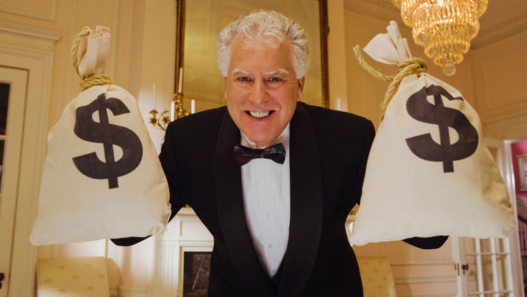

Ser millonario es una de las metas mas
importanttes para la mayoria de la humanidad,
sin embargo este es un proceso largo que requiere
mucho trabajo, esfuerzo y dedicacion. Muchas
personas tienen la meta de ser rica por
diferentes razones , algunas porque quieren
un mejor estilo de vida y otras porque quieren
terminar su carrera universitaria y finalmente
estan las personas que desean ayudar a las
personas que mas lo necesitan , sin importar
sus inteciones, muchas personas no logran sus
objectivos
Probablemente muchas personas no triufen en la vida arriesgandose y perdiendo lo poco que han logrado pero debemos entender que el miedo es algo que tenemos que sacar de nuestra vida si en realidad queremos ser millonarios , el miedo es nuestro mayor enemigo en este proceso por el cual es una de las razones que las personas cada vez son mas pobres y nunca llegan a ese punto alto que tanto desean , por mas intenciones que tuviera de progresar nunca van a cumplir esas metas porque no correran con ese riesgo a perder a diferencia de los ricos , ellos siempre estan dispuestos a correr esos riesgos porque saben que habran dos resultados ganen o pierdan pero siempre van a tener una ensenanza que les va ayudar a futuro y sin importar el resultado siguen arriesgando porque saben que muchas veces perder es ganar.
| Person 1 | Person 2 | Person 3 |
|---|---|---|
| Jeff Bezos | Elon musk | Bill Gates |
| 182 mil millones de dolares | 184 mil millones de dolares | 132 mil millones de dolares |
Cuando te obligan a pensar,esfuerza tu mente y cuando trabajas tu mente para cosas buenas siempre obtienes resultados positivos. Estas es una de la razones por las que los ricos son muy inteligentes porque muchas veces en su vida han tenido que forzar tu mente para pensar en algo que les ayude a multiplicar sus fortunas o muchas veces han llegado al limite de que no tiene mas que tienen esa intencion de progresar sin importar lo que tengan que hacer.
Muchos de ustedes se pregutaran como ser millonarios si mi cuenta
bancaria esta en cero o peor aun en un numero negativo , con el
solo hecho de tener pensamiento negativo estas fallando en el
comienzo de proceso porque estas pensado como una persona pobre
ya que el tener tu cuenta bancaria en cero no es excusa para
empezar a construir tus metas y es necesario siempre tener tu mente
positiva y preparada para cualquier tipo de reto que se atraviese.
La mayoria de los pobres se conforman con un salario fijo y trabajan
muchas horas de su tiempo para recibir un salario pobre a fin de mes y
te das cuenta que son felices recibiendo ese miserable salario que no
merecen , sin embargo aunque se vean felices por fuera realmente por dentro
se sienten en depresion porque ese sueldo miserable no les alcansa para
tener ese estilo de vida que siempre sonastes , en otros casos muchos
jovenes obtienen un titulo universitario tomando 10 a 15 anos de su vida
para tratar de obtener un salario fijo y pagar la deuda que usaron mientras
tomaban sus respectivas clases , en mi opinion lo respeto y felicito a todas
las personas que dedican su tiempo a estudiar lo que quieren , pero si
realmente estan buscando ser millonarios , deben buscar otras opciones , puedo
decir que un pequeno porcentaje de personas usa su titulo para invertir y
encontrar la manera de multiplicarlo todas las ganancias que han conseguido
y por el contrario la gran mayoria busca un buen trabajo con un salario rentable
que les ayude a sobrevivir en este mundo donde la inflacion va en aumento.
Hoy en dia el mundo esta lleno de mucho dinero y hay miles de formas de
ganar dinero pero en mi opinion esto es algo que ha afectado mucho la
mente de las personas porque el mundo se esta llenando cada vez mas de
gente floja , por ejemplo yo les aseguro que la mayoria de los jovenes
ya no estan interesados en ir ala universidad porque se estan dando cuenta
que el dinero se puede encontrar mucho mas facil en las redes redes sociales
como youtubers or influencers y esta es la razon pricipal por la que los
jovenes prefieren buscar una manera mas facil para generar ingresos. Muchos
deportistas ganan demasiado dinero porque hacen lo que les gusta y porque
hoy en dia el mundo del deporte esta bien pagado , todo bien hasta ahi pero
nunca te has preguntado porque muchas deportistas han sido millonarias y
de un momento a otro se van ala banca rota , pues la respuesta esta en la
mente de este tipo de personas que se creen millonarios y mal gastan su
dinero en lujos, autos, y cadenas de alta gama sin importar las concecuencias
que pueda traer en el futuro cuando por el contrario lo que deberian de hacer
es invertir ese dinero que generan ya sea en una empresa o bienes raices ,
que es lo que normalmente haria una persona verdaderamente rica , por esta razon
yo siempre aconsejo a los jovenes sobre como ser una personas exitosa "solo no
pienses en el presente porque hay un futuro que nos espera".
La mente y educacion que reciben las personas es la principal causa
el porque hay mas pobres que ricos en el mundo , es decir gran
parte de la humanidad no tiene el verdadero conocimiento de como
ser una persona exitosa y por el contrario la mayoria de ellos
son educados con una mente pobre y se olvidan que la mente es la
parte fundamental en lo que quieres lograr con tu vida, por ejemplo
si en tu mente siempre esta la frase "no puedo hacerlo esa
siempre sera el resultado de todo lo que intentes hacer pero por
el contrario , si siempre tienes en tu mente la frase "tengo que hacerlo
y lo voy a lograr", ese sera el resultado de lo que intener hacer ,
sin importar el grado de dificultad.
El estilo de vida es un factor importante para esa persona que realmente
quiere ser una millonario , es decir , muchas personas son mentalmente ricas
cuando en realidad no lo son y son este tipo de personas que gastan su dinero
de manera exagerada sin pensar en su futuro y este el gran error que cometen
muchas personas y se dejan llevar por lo que aparentan ser y no por lo que
realmente tienen. Todos tenemos que saber que en la vida esta el presente y el
futuro; No importa cuanto dinero tengas en tu cuenta actualmente si no sabes
administrarlo en un futuro lo vas a perder.La gran diferencia entre el rico
y el pobre es que las personas pobres presumen lo que no tienen mientras que los
ricos trabajan para generar mas dinero aunque sean ricos.
Ganancias pobres vs Fortuna infinita
Millonario hoy y pobre manana
Tres cosas que hise para ser una persona exitosa
Porque hay mas gente pobre que rica en el mundo ?
Cambia tu estilo de vida

Si tienes alguna pregunta sobre el tema puedes dejar
tu informacion en el cuadro que aparece abajo.